Ghosts
Week Three: Ghosts — Sources
[ ENG 6806 // FALL 2026 // WEEK OF SEPTEMBER 07, 2026 ]
https://www.nytimes.com/2025/08/26/technology/chatgpt-openai-suicide.html?unlocked_article_code=1.hE8.T-3v.bPoDlWD8z5vo&smid=url-share
https://towardsdatascience.com/symbolic-vs-subsymbolic-ai-paradigms-for-ai-explainability-6e3982c6948a
https://towardsdatascience.com/symbolic-vs-subsymbolic-ai-paradigms-for-ai-explainability-6e3982c6948a
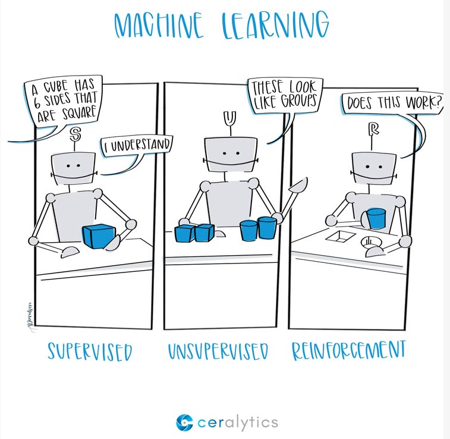
https://ceralytics.com/3-types-of-machine-learning/
https://www.chalkbeat.org/2025/07/08/openai-microsoft-teachers-union-ai-training-partnership/
From the start of the industrial revolution, workers have had to contend with displacement via automation and have resisted it for just as long. One of the hallmarks of the beginning of this age was the concomitant rise of innovative technologies advertised to make work easier and simpler, and to increase productivity. Like modern AI boosters, those selling new technologies promised that they would usher in a rising tide that lifted up workers and business owners alike.
The AI Con – Page 43
https://www.theatlantic.com/technology/archive/2023/03/ai-chatgpt-writing-language-models/673318/
Luddites were not against technology. Some Luddites, weavers in particular, were into technologies that helped evaluate the quality of their work, for instance, being able to count the number of threads per inch, such that they could fetch a higher price at the market. Luddites were instead against technologies of control and coercion, and concerned about the loss of jobs, health, and community.
The AI Con – Page 45
https://www.economist.com/business/2025/07/14/ai-is-killing-the-web-can-anything-save-it
In the early 2000s, replacing hand-curated indexes like Lycos and Yahoo! seemed like a large boon for those struggling to navigate the unstructured web…but now Google Search itself structures the web, and not in a way that benefits the broader public: Google is first and foremost in the business of selling ads, not providing helpful access to information…Google’s advertising model has let to an inferior product, what author and technology critic Cory Doctorow has called “enshittification.”
The AI Con – Page 51
https://arstechnica.com/tech-policy/2025/08/authors-celebrate-historic-settlement-coming-soon-in-anthropic-class-action/
Most AI tools require a huge amount of hidden labor to make them work at all. This massive effort goes beyond the labor of minding systems operating in real time, to the work of creating the data used to train the systems…Time reported that OpenAI had subcontracted Kenyan workers making less than two dollars a day to filter out gore, hate speech, child sexual abuse material, and pornographic images from ChatGPT and OpenAI’s image generation tool DALL-E.
The AI Con – Page 59
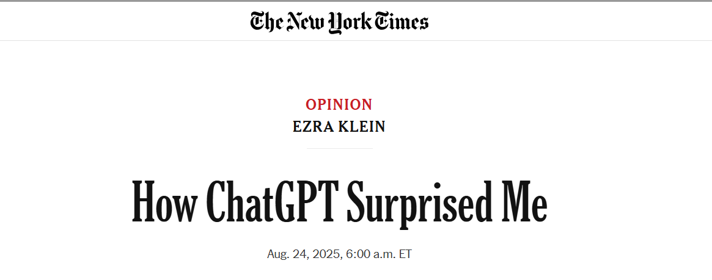
https://archive.ph/XALqd
Readings: moved into this week for 2026
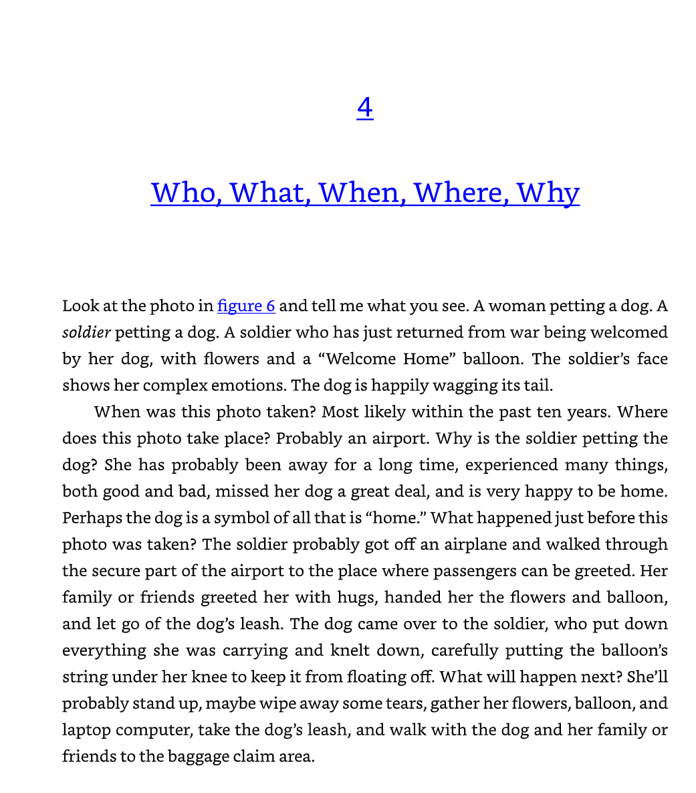
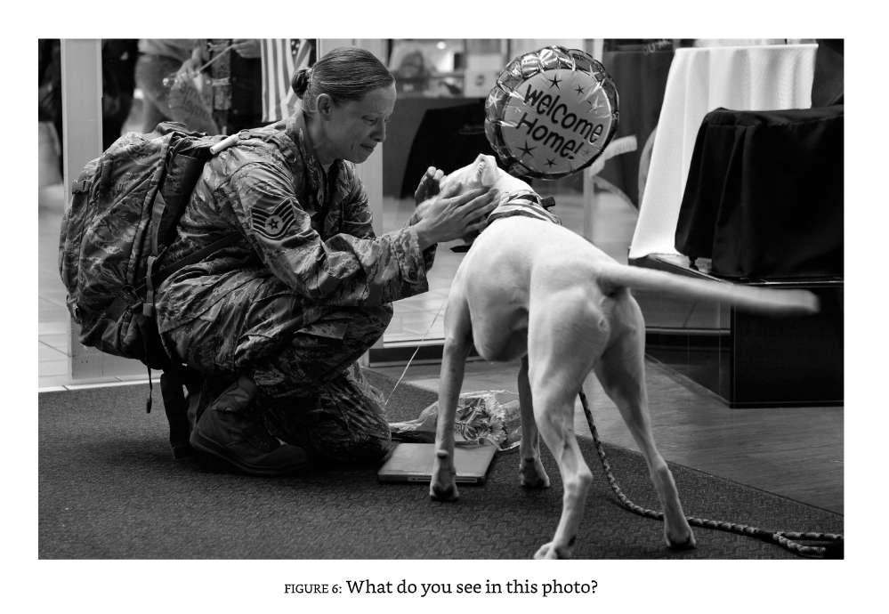
from the 2025 Week 5 deck — Mitchell part now assigned in Week 3 [vision: 'Chapter 4: Who, What, When, Where, Why' title + soldier/dog figure 6]
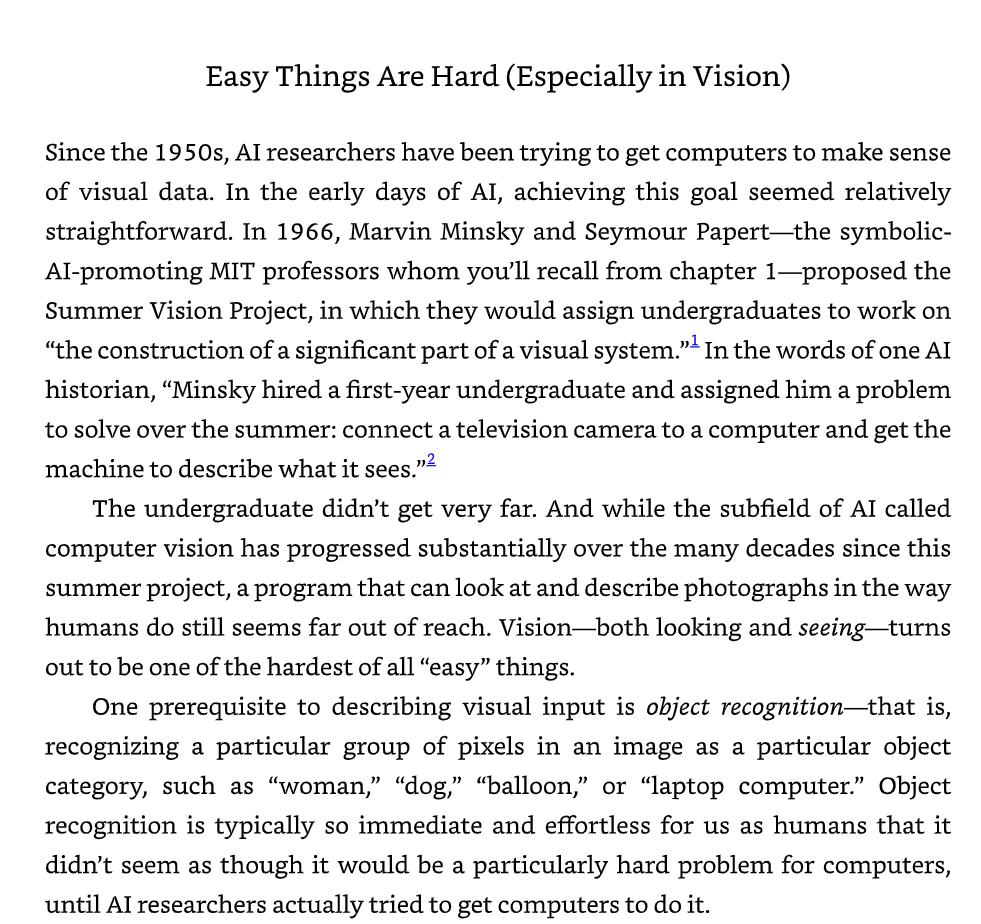
from the 2025 Week 5 deck — Mitchell part now assigned in Week 3 [vision: 'Easy Things Are Hard (Especially in Vision)': Minsky/Papert Summer Vision]
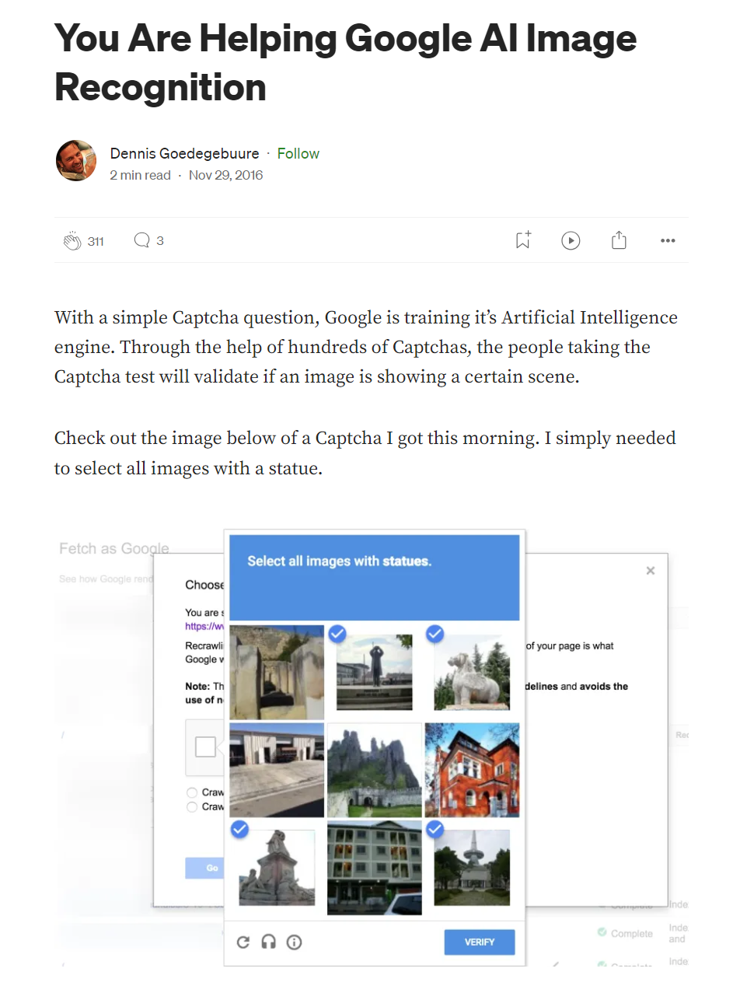
from the 2025 Week 5 deck — Mitchell part now assigned in Week 3 [vision: Google captcha screenshot illustrating image-recognition training in her chapter]
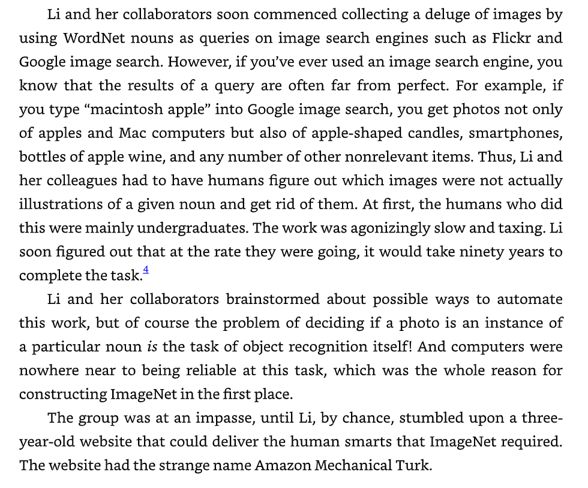
from the 2025 Week 5 deck — Mitchell part now assigned in Week 3 [vision: text: Fei-Fei Li, WordNet, ImageNet, discovering Mechanical Turk]
from the 2025 Week 5 deck — Mitchell part now assigned in Week 3 [vision: Amazon Mechanical Turk website screenshot, referenced in her ImageNet passage]
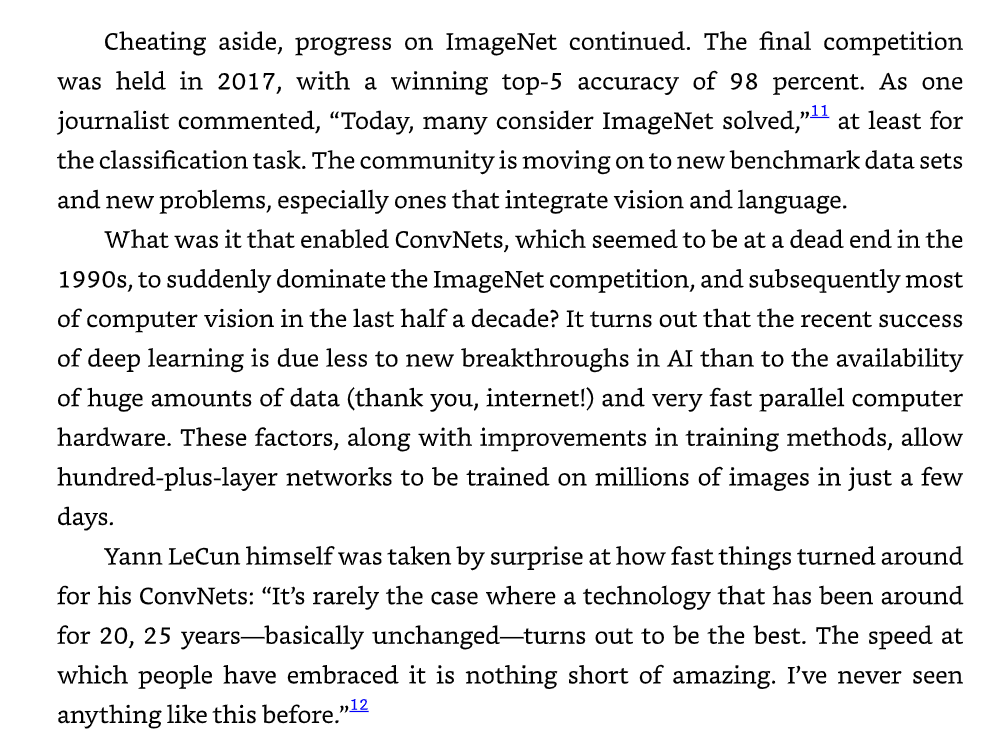
from the 2025 Week 5 deck — Mitchell part now assigned in Week 3 [vision: text on ImageNet competition results and Yann LeCun ConvNets quote]
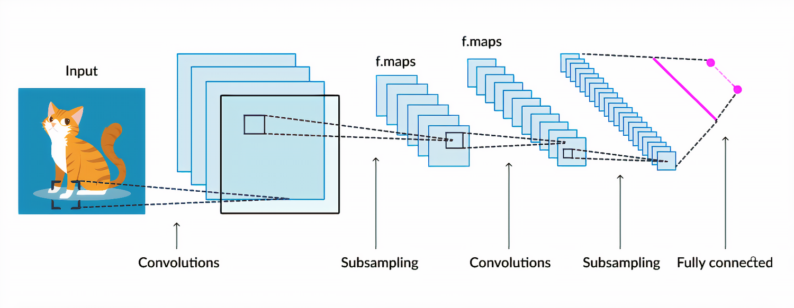
from the 2025 Week 5 deck — Mitchell part now assigned in Week 3 [vision: ConvNet architecture diagram (cat image) illustrating her chapter]
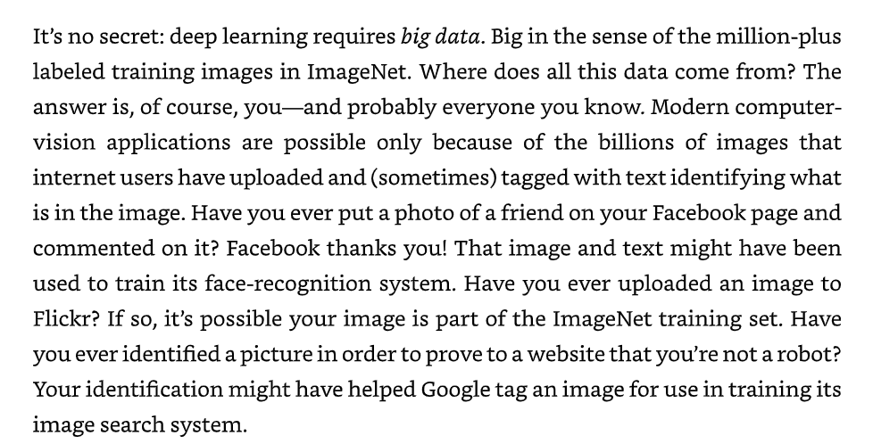
from the 2025 Week 5 deck — Mitchell part now assigned in Week 3 [vision: text: 'deep learning requires big data', ImageNet, Facebook, captchas]
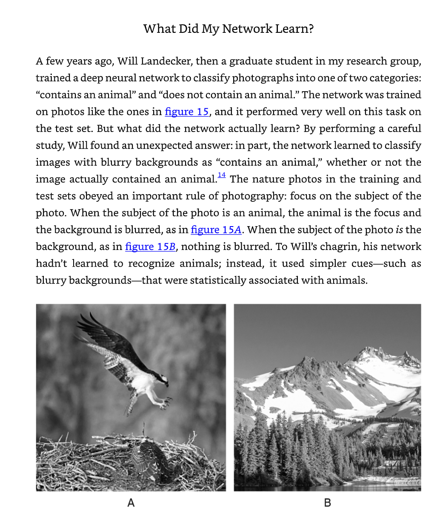
from the 2025 Week 5 deck — Mitchell part now assigned in Week 3 [vision: 'What Did My Network Learn?' first-person Will Landecker anecdote]
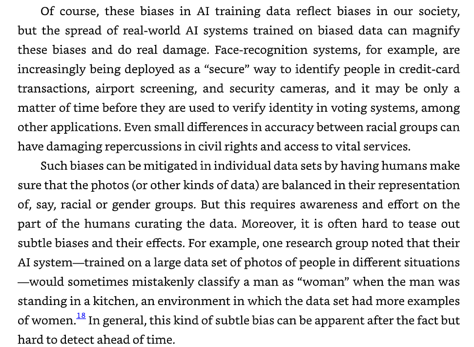
from the 2025 Week 5 deck — Mitchell part now assigned in Week 3 [vision: text on AI training-data biases, continuing her face-recognition section]
from the 2025 Week 5 deck — Mitchell part now assigned in Week 3 [vision: 'The Ethics of Face Recognition' text + Clearview/ICE news screenshot]